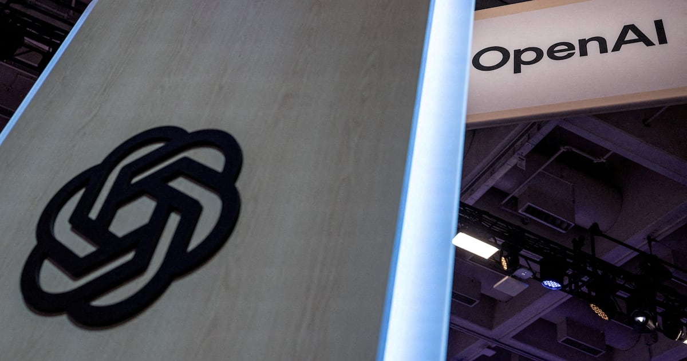
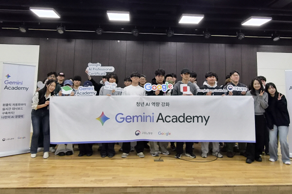
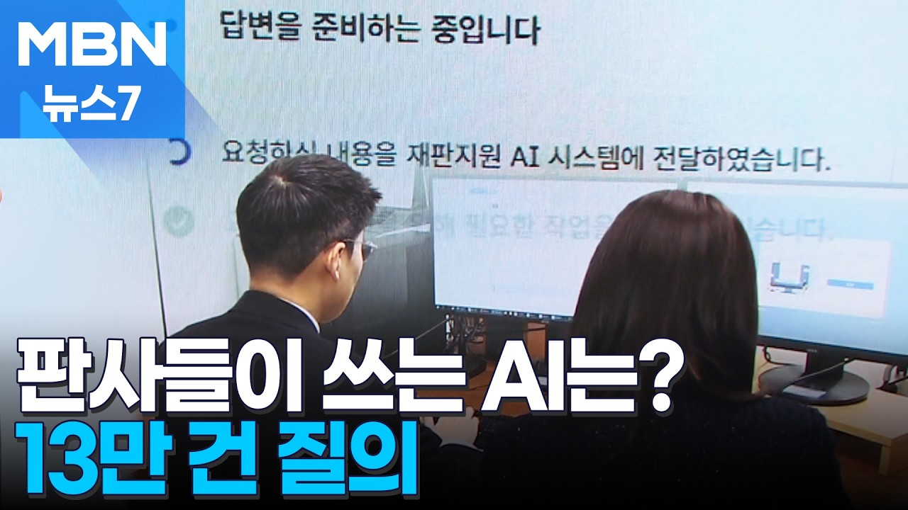
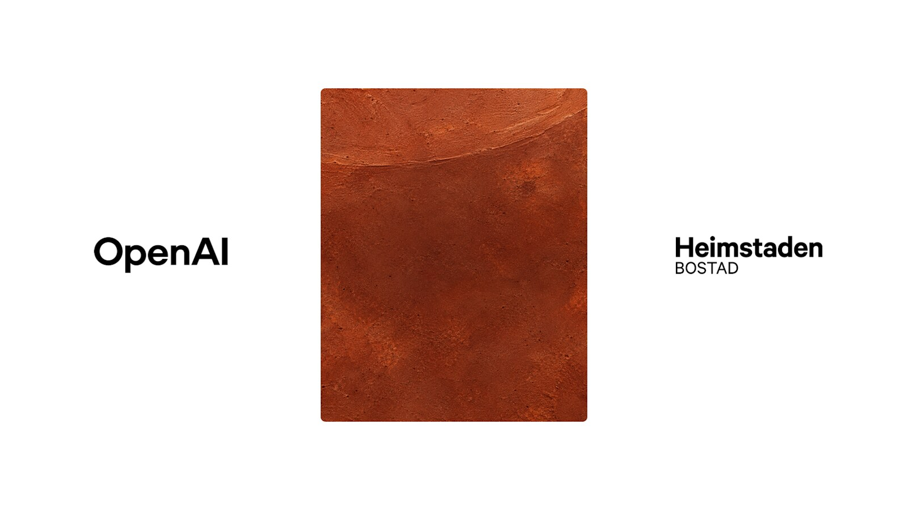

01 · KR
ChatGPT Search
검색 결과를 넘어 AI 답변의 출처가 되다
조선일보는 오픈AI 발표를 인용해 ChatGPT의 검색 유사 질문량이 구글 검색량의 20%에 달했다고 보도했다. 음성 기능 주간 이용자 2억5천만 명도 함께 언급됐다.
원문 보기 ↗ADDIT INSIGHT
브랜드는 검색 결과뿐 아니라 AI가 답변에 인용할 정보 구조를 함께 관리해야 한다.
Claude Code 침해와 ChatGPT 장애, Revolut의 비용 절감 사례, Gemini 교육·데이터 연결 확대를 통해 AI 운영의 조건을 정리합니다.
오늘은 AI를 도입하는 속도만큼, 문제가 생겼을 때 멈추지 않는 운영 구조를 점검합니다.
Claude Code 확장 2.1.313에서 SSH 백도어 발견 보도, 즉시 버전 점검 필요
Revolut는 GLM 전환으로 코딩 AI 비용을 약 90% 낮췄다고 밝혔다.
ChatGPT 검색은 커지고, 장애는 단일 도구 의존의 취약성을 드러냈다.
학교·자동차·기업마다 AI 사용 승인과 보안 기준이 달라지고 있다.
Gemini는 음성·로보틱스·기업 데이터 연결로 사용 장면을 넓힌다.

검색 결과를 넘어 AI 답변의 출처가 되다
조선일보는 오픈AI 발표를 인용해 ChatGPT의 검색 유사 질문량이 구글 검색량의 20%에 달했다고 보도했다. 음성 기능 주간 이용자 2억5천만 명도 함께 언급됐다.
원문 보기 ↗브랜드는 검색 결과뿐 아니라 AI가 답변에 인용할 정보 구조를 함께 관리해야 한다.
업무 도구의 편리함이 단일 의존으로 바뀌는 순간
한국경제는 ChatGPT 장애 당시 직장인들이 업무를 진행하지 못해 혼란을 겪었다고 보도했다. 같은 기사에서 클로드 이용자가 1년 새 853% 증가했다는 조사도 소개했다.
원문 보기 ↗AI 업무화의 다음 단계는 장애 때 바로 전환할 수 있는 백업 흐름을 만드는 것이다.

대학생 실무역량을 키우는 Gemini Academy
국제신문은 동의대가 고용노동부·구글코리아와 함께 ‘제미나이 아카데미’를 개최했다고 보도했다. 학생이 생성형 AI를 실제 학습과 업무에 활용하는 교육 접점을 만든 사례다.
원문 보기 ↗도입 확산은 라이선스 배포보다 과제·교육·피드백이 연결된 사용 장면을 설계할 때 빨라진다.

전문 영역의 질문량을 검수 책임으로 연결하다
MBN 뉴스7 영상은 ‘판사들을 위한 AI’를 주제로 2,600명이 13만 건을 질문한 사례를 다룬다. 법률·사법 영역에서 생성형 AI의 사용량과 검수 책임이 함께 커지는 장면이다.
원문 보기 ↗전문 영역에서는 질문량보다 답변의 근거·검수자·책임소재가 서비스 설계의 핵심이다.

부동산 운영에 ChatGPT Enterprise와 Codex 연결
OpenAI는 Heimstaden이 ChatGPT Enterprise와 Codex를 활용해 유럽 전역의 부동산 관리 업무를 혁신하고 비용을 절감하며 직원 역량을 강화하는 사례를 소개했다.
원문 보기 ↗효과는 모델 하나의 성능보다 반복 업무·전문 지식·개발 자동화를 한 흐름으로 묶을 때 커진다.